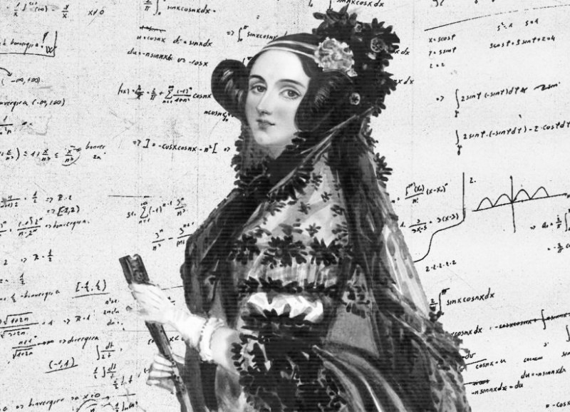

Augusta Ada Byron King, Condessa de Lovelace
Matemática, escritora

Biografia de Ada Lovelace
Augusta Ada Byron King - a Condessa de Lovelace - foi uma matemática e escritora que viveu na Inglaterra no século XIX. Filha do famoso poeta Lord Byron, Ada foi responsável por uma revolução no campo das ciências exatas, sendo reconhecida como a primeira programadora, ou seja, a primeira a inventar um algoritmo processado por uma máquina.Linha do tempo
1815 No dia 10
de dezembro de 1815 nasce Augusta Ada Byron.
1820 Ada
demonstrou um talento para matemática desde
cedo, era boa com números e
linguagem.
1828 Quando
Ada tinha apenas doze anos, construiu uma
pequena máquina voadora.
1833 Em uma
festa na inglaterra, conheceu Charles Babbage,
no qual ficou fascinada
pela ideia de
Babbage sobre uma máquina
que pudesse calcular números e escrever letras.
1835 Se casou
com William King
1837 Ada e
Babbage testaram o primeiro programa de
computador do mundo, sendo Ada a
desenvolvedora
do primeiro algorítimo de
todos.
1838 William
King e Ada Lovelace se tornam Conde e Condessa
de Lovelace
1843 Neste ano
Ada publicou seu trabalho usando as iniciais
A.A.L, que representavam
Augusta Ada
Lovelace.
1852 Em 27 de
Novembro de 1852, Ada veio a falecer aos 37
anos, devido a um câncer no
útero.
Se quiser saber mais sobre Ada
Lovelace, Clique
Aqui
Fontes utilizadas na página: Timetoast e eBiografia< /a>